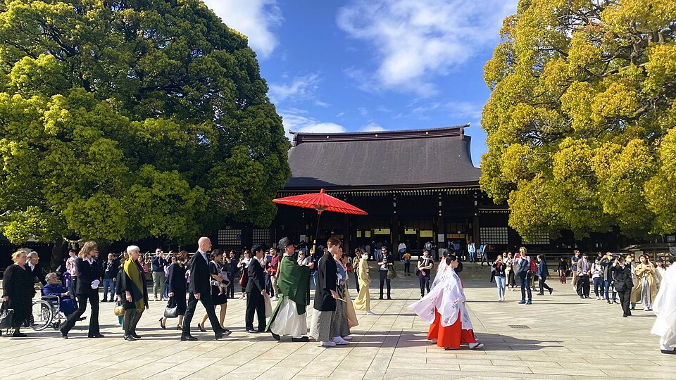
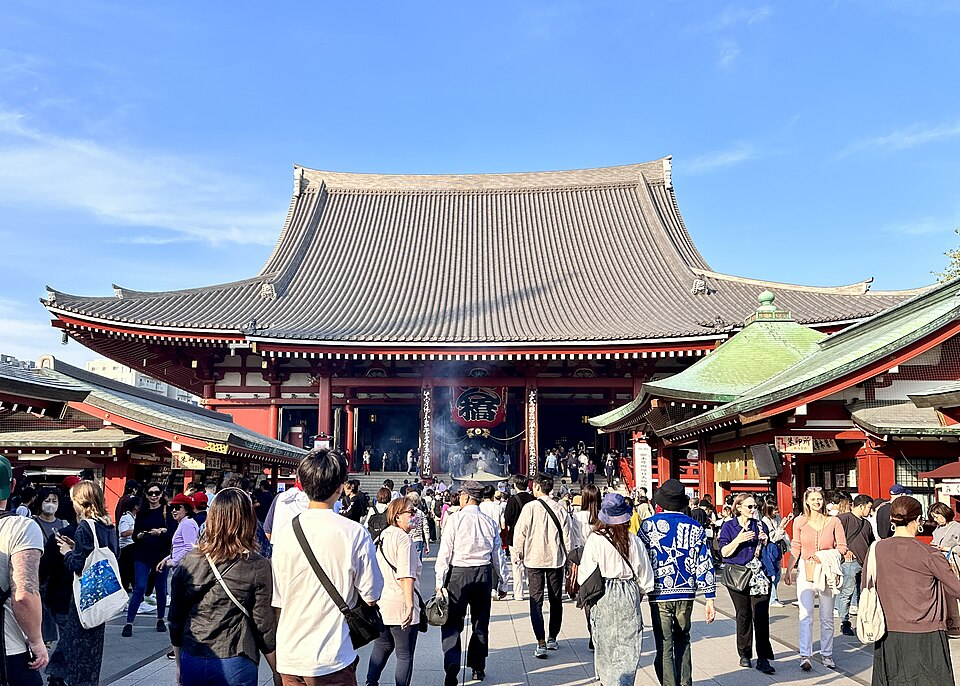
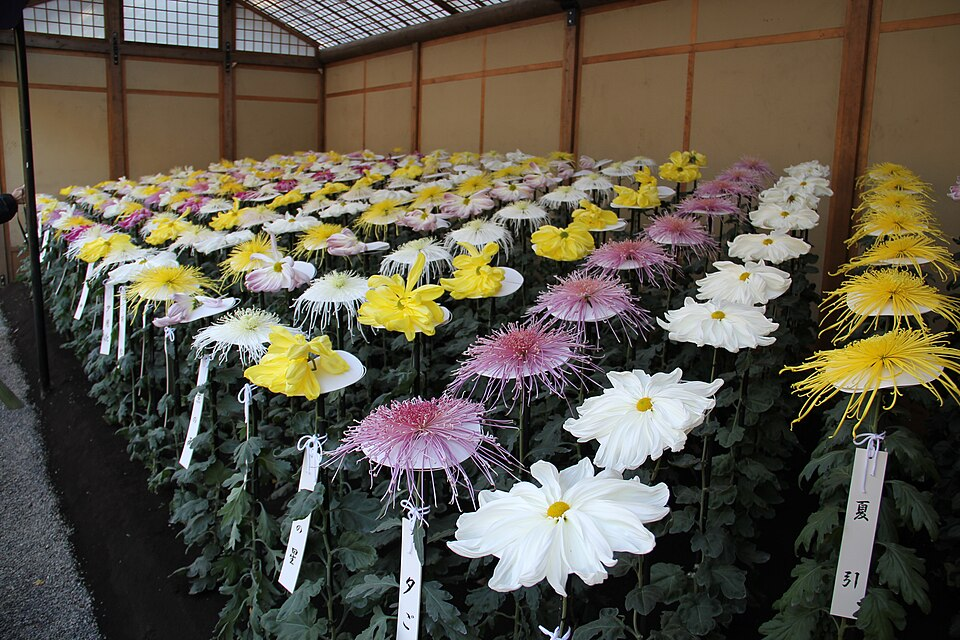
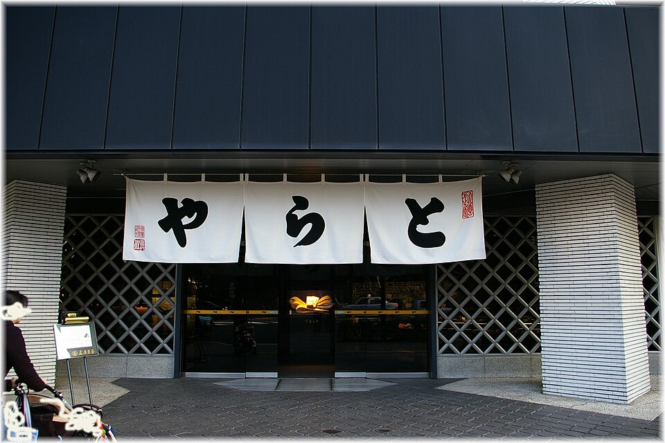

Nov 25 - Dec 2, 2026
Japan trip shortlist
What traveler-trusted sources recommend in Tokyo and nearby, filtered to our trip: 2 adults, 7 nights, no pork and no alcoholic drinks. This is a menu of options, not an itinerary or a hotel choice yet.
Explore the shortlists
Must-see sights
Updated: iteration 2, 2026-10-19/20
Nature, architecture, history and culture that travelers rate most highly.
Top picks: Meiji Jingu (with Harajuku if wanted); Senso-ji and Asakusa; Shinjuku Gyoen National Garden
20 picks: 4 A · 9 B · 7 CWalks and hikes
Lively city walks and easy-to-moderate hikes in busy, well-visited areas.
Top picks: Asakusa, Sumida and Skytree approach; Meiji Jingu, Harajuku and Shibuya; Shinjuku Gyoen and commercial streets
14 picks: 6 A · 5 B · 3 CTourist activities
Updated: iteration 2, 2026-10-19/20
Paid experiences, shows, rides and excursions worth planning around.
Top picks: teamLab Borderless (choose one Tokyo teamLab); SHIBUYA SKY (one skyline experience); Shinjuku sumo show with photo
21 picks: 6 A · 9 B · 6 CMust-eat food
Tourist-friendly places and foods that fit no pork and no alcoholic drinks.
Top picks: T's Tantan golden sesame vegan ramen, Akihabara; Honolu chicken paitan ramen, Ebisu; Toraya Yoru no Ume yokan; optional wagashi and tea
16 picks: 3 A · 11 B · 2 CMore ideas (from memory)
Extra Must-see, Walks and Activities ideas. Most of the Activities ideas, including the Fuji day tour and go-karting, have since been researched on the Activities page. The rest is unverified, so check live ratings.
Top ideas: Tokyo Tower and Zojo-ji; Akihabara Electric Town; Mt. Fuji day tour from Tokyo
21 ideas: 7 per category · no photosTrip snapshot
- Travelers
- 2 adults
- Arrive
- Wed, Nov 25, 17:45 at Haneda (HND), after sunset
- Depart
- Wed, Dec 2, 16:50 (departure airport not confirmed)
- Time on the ground
- 7 nights, 6 full sightseeing days, 2 partial days
- Daylight
- Sunset is about 16:28-16:29 every day of the trip
- Weather
- Typical highs and lows: about 17/9 °C in November and 12/4 °C in December. These are long-term averages, not a forecast, so pack layers.
- Food rules
- No pork, no alcoholic drinks (cooking sake and mirin are fine)
- Year
- Assumed to be 2026; all dates and prices should be rechecked before booking.
Top picks across all categories
Every A-tier pick, one tap from its full details.

Must-see Meiji Jingu (with Harajuku if wanted)
Must-see Senso-ji and Asakusa
Must-see Shinjuku Gyoen National Garden Must-see
Rikugien night illumination
Must-see
Rikugien night illumination
 Walks & hikes
Asakusa, Sumida and Skytree approach
Walks & hikes
Asakusa, Sumida and Skytree approach
 Walks & hikes
Meiji Jingu, Harajuku and Shibuya
Walks & hikes
Meiji Jingu, Harajuku and Shibuya
 Walks & hikes
Shinjuku Gyoen and commercial streets
Walks & hikes
Shinjuku Gyoen and commercial streets
 Walks & hikes
Kamakura Hase, coast and Komachi
Walks & hikes
Kamakura Hase, coast and Komachi
 Walks & hikes
Takao Trail 1/cable-car alternative
Walks & hikes
Takao Trail 1/cable-car alternative
 Walks & hikes
Ameyoko, Ueno and Yanaka Ginza
Walks & hikes
Ameyoko, Ueno and Yanaka Ginza
 Activities
teamLab Borderless (choose one Tokyo teamLab)
Activities
teamLab Borderless (choose one Tokyo teamLab)
 Activities
SHIBUYA SKY (one skyline experience)
Activities
Shinjuku sumo show with photo
Activities
Asakusa sushi-making class
Activities
SHIBUYA SKY (one skyline experience)
Activities
Shinjuku sumo show with photo
Activities
Asakusa sushi-making class
 Activities
Guided Mt Fuji day tour (Kawaguchiko or Hakone type)
Activities
Samurai Ninja Museum guided experience
Food
T's Tantan golden sesame vegan ramen, Akihabara
Food
Honolu chicken paitan ramen, Ebisu
Activities
Guided Mt Fuji day tour (Kawaguchiko or Hakone type)
Activities
Samurai Ninja Museum guided experience
Food
T's Tantan golden sesame vegan ramen, Akihabara
Food
Honolu chicken paitan ramen, Ebisu

Food Toraya Yoru no Ume yokan; optional wagashi and teaDates that shape the plan
| When | What to know |
|---|---|
| Wed, Nov 25 | You land at 17:45. With immigration and transfers, plan only an easy evening. Rikugien's evening light-up starts this day (Nov 25-Dec 6). |
| Nov 25 - Dec 6 | Rikugien garden night illumination, 18:00-20:30 (last entry 19:30). Separate ticket: ¥1,000 advance or ¥1,200 same day. |
| Fri, Nov 27 | Imperial Palace East Gardens are closed (they close Mondays and Fridays). |
| Mon, Nov 30 | Shinjuku Gyoen, the Tokyo National Museum (whose Toyokan closes for the month) and the Imperial East Gardens are closed. Kiyomizu-dera's night viewing ends. |
| Tue, Dec 1 | Ghibli Museum is closed. The Tokyo Metropolitan Government's south observatory is closed. |
| Every day | Sunset about 16:28. Meiji Jingu closes at 16:10 (November) or 16:00 (December). |
| About 2 weeks before | SHIBUYA SKY tickets open roughly two weeks ahead (about Nov 12-17 for Nov 26-Dec 1). Kawaguchiko buses release one calendar month ahead. |
| Wed, Dec 2 | Flight at 16:50. Keep the morning light and nothing far away. |
Closures and opening hours come from official pages checked on 2026-10-19 (Activities and Must-see: 2026-10-19/20). Recheck before you go.
Day trips from Tokyo at a glance
| Place | One-way time | Return cost per adult | Format | Verdict |
|---|---|---|---|---|
| Kamakura (and Enoshima) | About 1 hour | ¥2,200-2,700 | Day trip | Best nearby town walk with temples, the Great Buddha and the coast. |
| Mount Takao | 50-60 min | ¥860 (+¥980 return cable car) | Day trip | Best mountain value; weather-dependent and busy in autumn. |
| Lake Kawaguchiko (Fuji views) | About 2 hours | ¥4,400 by bus (¥5,900 with local pass) | Day trip | Only if the Fuji forecast is clear; a long day. |
| Hakone | 80-100 min + mountain transfers | ¥7,100 Freepass (¥9,500 with Romancecar) | Day trip or overnight | One big excursion; do not stack with other long trips. |
| Nikko | About 2 hours | ¥6,000-9,000 | Long day trip | For temples, not for late-autumn hiking. |
| Kyoto / Nara / Osaka | 2 hr 10 min+ by Shinkansen | ¥28,000-31,000 return | Overnight swap | Strongest cultural payoff but replaces Tokyo days; Nara and Osaka are best added from Kyoto. |
Not all of these fit six full days. Choose Tokyo plus one or two nearby trips, or swap in a Kansai overnight. Costs are planning allowances, not quotes.
Keep in mind
- Busy does not mean safe. The UK Foreign Office warns about touts, drink spiking and overcharging in popular nightlife areas (Kabukicho, Shibuya, Roppongi, Ikebukuro). Politely decline street invitations to bars.
- Mountain areas: bear sightings can occur near populated areas. Check the local trail notices before hiking.
- Food: no restaurant is certified. Use the ordering card on the food page and read ingredient labels.
- Review counts: Activities and Must-see use live Google Maps, TripAdvisor and (where they exist) Viator, GetYourGuide and Klook counts, never added across platforms (Viator and TripAdvisor tour counts are one pool). The other categories only checked some Google-labelled counts, and where evidence was thin, confidence is capped at medium.
- Sources: Walks and Food rest mostly on traveler diaries plus official venue pages, because Reddit and the booking sites were not readable then. Activities and Must-see were redone with live listings and official pages, but Reddit stayed blocked and no video or podcast was watched or heard.
How to read the shortlists
- A · Strongest fit: best value for your time and the most consistent traveler support. A picks show up to 3 photos.
- B · Worth it if it fits: good choices that depend on interests, weather or a longer trip. B picks show 1 photo.
- C · Conditional: only worth it for a specific reason. Description only, no photo.
- Photos appear only when a free photo of the actual place exists. Where none does (for example a small class or a show), the card has no photo rather than a generic one.
- Confidence (high, medium, low) reflects how well traveler accounts agree and how settled the logistics are. It is not a safety guarantee.
- Open More details and sources on any card for traveler evidence, access, crowds, seasonal fit and safety notes.
- Sonnet Memory Overlap means the More ideas page has an idea at the same place, area or purpose. Each badged card links to it, and the rank was reviewed against it.